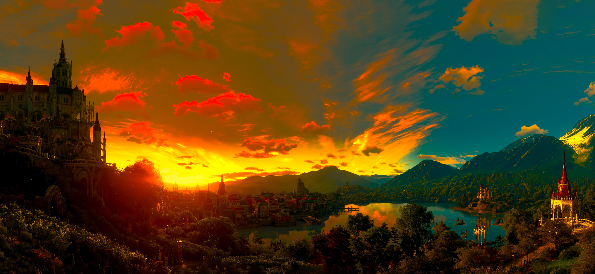
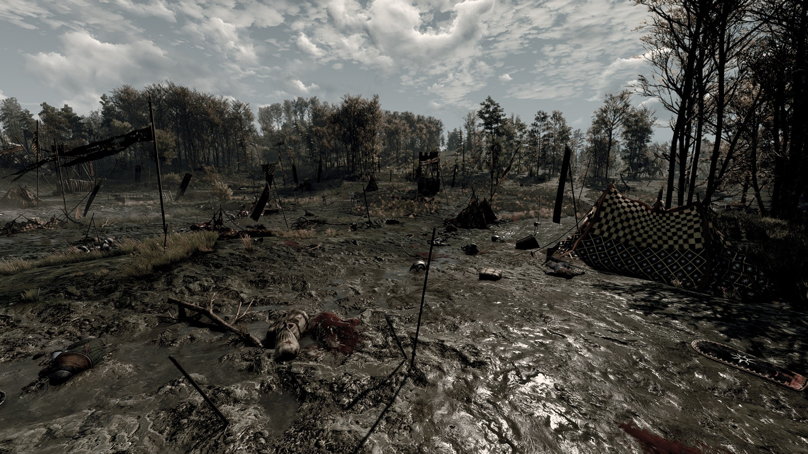

"If I'm to choose between one evil and another, I'd rather not choose at all." - Geralt of Rivia
The Witcher 3 is the only game I ever bought and played in secret. Here is why it deserves your time:
The Witcher III: Wild Hunt is one of the biggest games of all time. This is written pre-GTA 6. Future Mattis, please tell me what the world looks like post-launch. Anyway... I heard about the game for the first time shortly after its release. A YouTuber I liked played it, and I wanted to play it too!
The only problem was that I was 17 at the time, and my parents wouldn't allow games rated 18+. That is why (I'm sorry, Mom and Dad) I bought a Steam gift card, paid for the game with it, and downloaded it. Then I waited until 3 AM. I started playing and immediately got lost in the world.
Before I knew it, it was 6 in the morning, and I had to stop before my parents would get up.
The Witcher III: Wild Hunt is a third-person action RPG developed by CD Projekt Red and the third installment in the Witcher series. The world is immersive and detailed, the soundtrack is one of the best in my opinion (right up there with Skyrim and the Ori games),
the story is well-written and incredibly interesting, and the quest design is exceptional. I'm sorry for all the praising, but you need to understand that this right here is not a review, but a love letter! This is, to this date, my favorite game of all time!

The world of The Witcher III is breathtaking...

...and full of dark secrets.
The first memory I have of the game is (minor spoilers, but the game is 10 years old, lol) when you see Eredin for the second time (when you're in that snowy village). It was 4 in the morning, everything was tense, and then that music hits you. Plus, you have to climb into the cellar. I was legit scared and decided to turn it off for the night.
I loved everything about that. I had never been this immersed in a game or story before, and I've read hundreds of books. I could yap about the story, characters, and gameplay for hours, but at this point, hopefully, everyone has heard about this game.
My first playthrough took me about 100 hours. Right now, I'm trying to go for platinum, meaning getting every achievement there is. I have about 350 hours in the base game plus DLCs, and I still find new things in every playthrough (I'm on my 5th right now).
In conclusion: If you haven't played The Witcher III, take some time during your holidays and give it a try. If you like good stories, quests, characters, gameplay, and an amazing soundtrack, you have to play it. It is worth EVERY. SINGLE. SECOND!
~ZyXx
Update from May 27, 2026: A new DLC has been announced! "The Witcher III: Wild Hunt – Songs of the Past"
As we really don't know anything about this DLC yet, other than the fact that we will be playing Geralt again, I thought it would be the perfect time to talk a little about the DLCs we already have.
Namely, Blood and Wine and Hearts of Stone. While Hearts of Stone is an amazing DLC with another very interesting and captivating story, my heart demands to say it: Blood and Wine is (for me) without a doubt, THE BEST DLC OF ALL TIME!
There's just something about the setting, the music, and the vampiric story that fits together so perfectly. We also get to see one of my favorite book characters again: Emiel Regis Rohellec Terzieff-Godefroy. The world of Toussaint is so vibrant in comparison to places like Velen that it feels like a fairytale most of the time. The story is phenomenal, especially if you love vampire stories like I do and the conclusion we get at the end is just amazing, the perfect sendoff for Geralt and his journey.
Since these love letters aren't supposed to be hour-long essays, I will stop here, but just know that I could easily go on for hours talking about this DLC.
It was, it is, and it will always be a MASTERPIECE! Go play it, and we will see each other in 2027 when Songs of the Past releases!